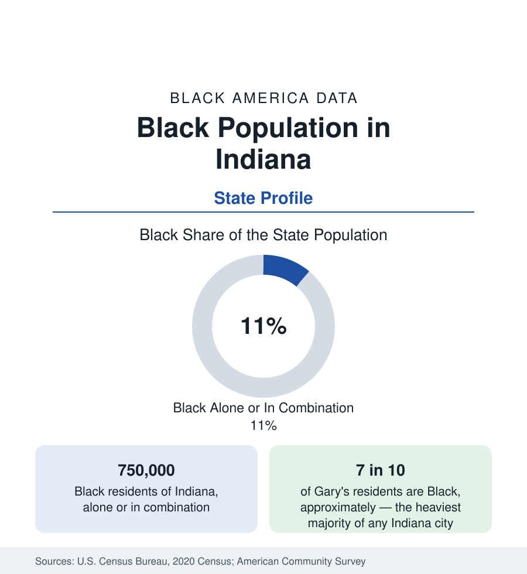

Black Census
Black Population in Indiana: Indianapolis and the Calumet
About 750,000 Black Hoosiers — one in nine residents — between Indianapolis's near-third and Gary's heavy majority in the Calumet region. The census profile.

Indiana holds about 750,000 Black residents — Black alone or in combination — roughly one in nine of its people, with Black alone at about 648,000, or 9.6 percent. The state's Black geography is a tale of two industrial zones: Indianapolis, the capital, where Black residents approach three in ten of the consolidated city-county; and the Calumet region in the northwest corner — Gary, Hammond, East Chicago — where steel built some of the most heavily Black cities in the Midwest. Between them, a set of mid-sized manufacturing cities carries the rest. This article profiles the population in the census data.
Indianapolis: The Center
Indianapolis holds the state's largest Black population: about 260,000 people, nearly three in ten of the city-county, in a community that reaches back to the free Black settlements of the 1820s and grew through the migration decades into a complete urban Black world — Indiana Avenue's jazz and business district at its historic heart, the near-northside neighborhoods around it, and today a population spread across the township suburbs of the unified county and beyond into Hendricks, Hamilton, and Johnson counties. The city's Black institutional base — its churches, the Madame Walker legacy (the hair-care empire built here made its founder among the first self-made women millionaires in the nation, and her theater building anchors Indiana Avenue still), Martin University, the state's predominantly Black university — anchors a professional class employed across health care, logistics, state government, and the pharmaceutical and sports economies.
The Calumet: Gary, Hammond, East Chicago
The northwest corner is demographically another state. Gary, founded in 1906 as the United States Steel company's town, drew Black workers from the South in the migration's first waves and became majority Black by the 1970s; today roughly seven in ten of its approximately 69,000 residents are Black, in a city whose population has fallen by more than 60 percent from its steel-era peak and whose fiscal and service data are among the most difficult of any city in this reference. East Chicago, its neighbor, is a majority-minority industrial city with a large Black community alongside one of Indiana's largest Latino populations. Hammond, the region's largest city, is roughly a quarter Black. The Calumet's Black population, about 150,000 across the region, lives inside metropolitan Chicago's economy — the state line in the data is administrative; the labor and housing markets are one.
The Mid-Sized Belt
Fort Wayne, the state's second city, is roughly a sixth Black, with a community built on the harvester and electrical industries. South Bend is more than a quarter Black, its west side a historic community adjoining the university economy of Notre Dame. Evansville, on the Ohio River, is roughly an eighth Black with roots in the river trade; Terre Haute, Muncie (whose Black community was documented in the famous Middletown studies), Anderson, Kokomo, and Elkhart — the manufacturing belt — each record Black shares in the range of a tenth to a fifth, and the industrial decline's data signature in common. The rural counties of the south hold small, old communities along the river; the farm counties of the center and north, very small ones.
Composition and Change
Indiana's Black population grows slowly, on the Indianapolis suburbs' expansion and stability in the mid-sized cities, against continued decline in the Calumet core cities even as their suburbs (Merrillville, Crown Point's corridor) gain Black homeowners. The state has no HBCU — a gap in the region's institutional map that the education data register in Indiana Black students' out-of-state HBCU enrollment — and its Black indicators track the industrial Midwest's pattern: income below national Black averages, attainment rising through the Indianapolis universities and the Ivy Tech community college system, whose Black enrollment is among the largest in the state system.
Reading the Indiana Numbers
Indiana is read correctly as two profiles bound in one state file: a capital-city community of a quarter-million with a complete institutional structure, and a steel-corner population in the nation's most documented industrial contraction. The counties between them carry the smaller manufacturing story. The state average — one in nine — belongs to none of the three.
The Indianapolis profile in the cities section carries the capital's neighborhood-level account.
More in Black Census
The Black Population of the United States: Size, Definitions, and Distribution
The Black population of the United States totals 52.8 million — 15.4 percent of the nation. How the Census Bureau defines and counts the population, and where it lives.
Black Median Household Income in the United States
Black median household income stands at $56,490 in the Census Bureau's annual income report — how the figure is measured, how it compares, and what drives it.
The Black Poverty Rate: Levels, Children, and the Long Trend
The official Black poverty rate is 17.1 percent — against 11.1 percent nationally and 7.7 percent for non-Hispanic White Americans. How poverty is measured and what the data show.
Source: U.S. Census Bureau, 2020 Census; American Community Survey; Population Estimates Program.